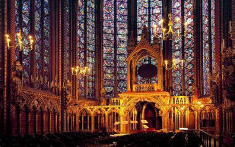

A arte na Idade Média
A Arte na Idade Média era muito influenciada pela Igreja Católica, que fez com que muitas obras artísticas tivessem temática religiosa.
A Idade Média iniciou-se com a queda de Roma no ano 350 d.C. e durou até o ano de 1450, quando teve início o Renascimento. Durante a Idade Média, o cristianismo dominou a cultura ocidental. O propósito da Arte na Idade Média era ensinar religião e a arquitetura era utilizada para construir catedrais belíssimas e adornadas.
Durante a Idade Média, ocorreu uma onda de construção de igrejas e catedrais que foram verdadeiras obras-primas. Para construir essas igrejas, foi necessário o trabalho de centenas de homens. As igrejas viravam o orgulho da cidade. Os teólogos da época acreditavam que a beleza das igrejas inspirava a fé nas pessoas e as atraía ao cristianismo.
Os artistas medievais focavam em contar histórias da Bíblia e fazer objetos luxuosos para serem usados durante a missa. As esculturas e pinturas eram utilizadas para ensinar o cristianismo aos fiéis, pois a maioria da população da época era analfabeta. Pinturas e esculturas frequentemente decoravam o interior das igrejas e retratavam narrações da Bíblia, a vida dos santos, a ascensão de Jesus e o Juízo Final. Os nus foram proibidos e pinturas do corpo humano, mesmo que vestido, não eram bem vistas.
Os manuscritos iluminados eram copiados por monges e freiras e eram considerados objetos sagrados. Os manuscritos eram decorados com capas de ouro e pedras preciosas, para que sua beleza refletisse seu conteúdo sagrado.
A arte medieval se compôs do estilo bizantino, romano e gótico.
Arte Bizantina
Os artistas bizantinos foram influenciados pela arte clássica greco-romana e a do Oriente Médio. A arte bizantina combinava cores vivas e desenhos elaborados que frequentemente traziam temas ou símbolos religiosos. Os artistas bizantinos tornaram-se particularmente conhecidos por sua habilidade em fazer mosaicos que eram usados para decorar as igrejas bizantinas.
A arquitetura bizantina também era extraordinária. Após um incêndio ter destruído grande parte de Constantinopla em 532 d.C., o imperador Justiniano iniciou um grande programa de construção de igrejas e mosteiros no Império. A nova catedral da cidade, construída durante um período de cinco anos, foi chamada de Hagia Sophia - a "Igreja da Sagrada Sabedoria". Era a mais magnífica igreja do Mediterrâneo na época. Ao construí-la, os arquitetos bizantinos desenvolveram uma forma de usar uma cúpula sobre uma construção retangular. As próximas igrejas ortodoxas orientais a serem construídas frequentemente possuíam a mesma cúpula e mosaicos em suas paredes, chãos e tetos. A arte e arquitetura bizantina espalharam-se por várias partes do Império, particularmente nas áreas da Europa Oriental onde missionários levavam os ensinamentos das Igrejas Ortodoxas Orientais.
Arte Românica
A típica estrutura romanesca possuía paredes maciças - necessárias para conseguirem segurar o teto - e pequenas janelas, contendo um interior pouco iluminado. A construção usava poucas cores e ornamentos, mas suas portas e paredes eram decoradas com esculturas religiosas. O estilo romanesco foi utilizado para decorar igrejas, castelos e mosteiros da Europa.